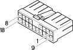

M040B Integrated services control unit (REAR)
- Path
- Electrical equipment > 3 Connectors > M Intermittent and timed electronic devices,.. > M40 Integrated services control unit > M040B Integrated services control unit (REAR)
- Kind
- connector pinout (pin -> wire colour -> other end)
- Applies to
- all engines; production: fino a 05/99, da 09/03, da 06/99 a 03/02, da 04/02 a 08/03
- Interactive page
- https://sloeber94.github.io/elrnDB-fMltpl/en/#/186004256
Applies to: all engines; production: fino a 05/99, da 09/03, da 06/99 a 03/02, da 04/02 a 08/03

Wiring | Colour |
|---|---|
BIANCO (white) |
Pin | Cable | Destination | |||
|---|---|---|---|---|---|
Diameter | Colour | Node | Connect. | Pin | |
HM (grey with brown stripe) | |||||
BN (white with black stripe) | |||||
HB (grey with white stripe) | |||||
G (yellow) | |||||
H (grey) | |||||
LR (blue with red stripe) | |||||
R (red) | |||||
HG (grey with yellow stripe) | |||||
HR (grey with red stripe) | |||||
RG (red with yellow stripe) | |||||
HN (grey with black stripe) | |||||
N (black) | |||||
VG (green with yellow stripe) | |||||
B (white) | |||||
A (light blue) | |||||
SG (pink with yellow stripe) | |||||
HL (grey with blue stripe) | |||||
Topics linked from this page (17)
- 25 REAR
- B001E Junction unit ( REAR )
- B19 Door lock fuse
- C15 Facia earth, driver's side
- D6 Front/rear junction
- D20 Facia/rear junction
- D31 Front door junction right
- D35 Rear left door connection
- D36 Rear right door connection
- D45 Sunroof connection
- D85 Rear/tail-gate junction
- D030 Front door junction left
- G10 Front courtesy light
- H71 Boot opening switch
- I50 Inertia switch
- J56 Boot opening relay
- M040A Integrated services control unit (REAR)
Topics that link to this page (50)
- B001E Junction unit (REAR)
- B019 Door lock fuse (REAR)
- C015 Facia earth, driver's side (REAR)
- C015 Facia earth, driver's side (REAR)
- D006 Front/rear junction ( FRONT )
- D006 Front/rear junction ( FRONT )
- D006 Front/rear junction (REAR)
- D006 Front/rear junction (REAR)
- D020 Facia/rear junction (FACIA)
- D020 Facia/rear junction (FACIA)
- D020 Facia/rear junction (REAR)
- D020 Facia/rear junction (REAR)
- D031 Front door junction right ( FRONT PASSENGER DOOR )
- D031 Front door junction right ( FRONT PASSENGER DOOR )
- D031 Front door junction right (REAR)
- D031 Front door junction right (REAR)
- D031 Front door junction right (REAR)
- D031 Front door junction right (REAR)
- D031 Front door junction right (REAR)
- D045 Sunroof connection (REAR)
- D045 Sunroof connection (REAR)
- D085 Rear/tail-gate junction ( LEFT TAILGATE )
- D085 Rear/tail-gate junction ( LEFT TAILGATE )
- D085 Rear/tail-gate junction (REAR)
- D085 Rear/tail-gate junction (REAR)
- D030 Front door junction left
- D030 Front door junction left
- D030 Front door junction left ( REAR )
- D030 Front door junction left (REAR)
- D030 Front door junction left (REAR)
- D030 Front door junction left (REAR)
- D030 Front door junction left (REAR)
- G010 Front courtesy light (REAR)
- G010 Front courtesy light (REAR)
- H071 Boot opening switch (REAR)
- H071 Boot opening switch (REAR)
- H071 Boot opening switch (REAR)
- I050 Inertia switch ( REAR )
- I050 Inertia switch ( REAR )
- I050 Inertia switch ( REAR )
- I050 Inertia switch ( REAR )
- I050 Inertia switch (REAR)
- I050 Inertia switch (REAR)
- I050 Inertia switch (REAR)
- I050 Inertia switch (REAR)
- I050 Inertia switch (REAR)
- J056 Boot opening relay (REAR)
- M040A Integrated services control unit (REAR)
- M040A Integrated services control unit (REAR)
- M040A Integrated services control unit (REAR)